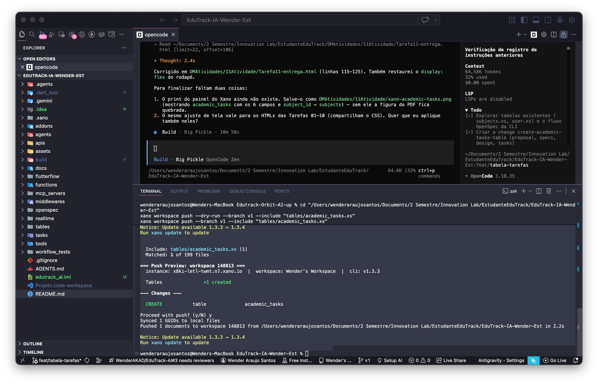

| Disciplina | Innovation Lab: Desenvolvimento Avançado No/Low Code |
| Módulo | 2 – Integração Frontend-Backend |
| Pré-requisitos | Tarefa 08 (OpenSpec + tabela subjects) |
| Aluno | Wender Araújo Santos |
| E-mail institucional | wender.araujo@aluno.impacta.edu.br |
| Data de entrega | 15 de outubro de 2026 |
| Branch | feat/tabela-tarefas |
| Repositório | github.com/wenderaraujo-creator/EduTrack-IA-Wender-Est |
O objetivo é criar a tabela academic_tasks — as tarefas acadêmicas do aluno (lições, provas e trabalhos) — diretamente por código, no backend do Xano, seguindo o processo de planejamento do OpenSpec.
| Conceito | O que significa no projeto |
|---|---|
| Spec-Driven Development | Primeiro se escreve a especificação da mudança; só depois se escreve o código. A spec é a fonte de verdade. |
| Tabela (Xano) | Estrutura de dados do backend. Equivalentes: subjects, user e agora academic_tasks. |
| XanoScript | Linguagem declarativa do Xano para descrever tabelas, APIs e funções em arquivos .xs. |
| Relationship | Campo que liga uma linha a outra tabela — aqui, subject_id liga cada tarefa à sua disciplina. |
A mudança foi planejada antes do código, com os quatro artifacts do schema spec-driven:
| Artifact | Arquivo | Papel |
|---|---|---|
| proposal | proposal.md | Por quê e o que muda |
| specs | specs/academic-tasks/spec.md | Requisitos com cenários WHEN/THEN |
| design | design.md | Decisões técnicas (tipo de data, ausência de user_id, etc.) |
| tasks | tasks.md | Lista de execução |
Validação da mudança e das specs permanentes:
openspec validate create-academic-tasks-table --strict → Change 'create-academic-tasks-table' is valid openspec validate --specs --strict → 3 passed, 0 failed (spec/user, subjects, academic-tasks)
Depois do push ao Xano, a mudança foi arquivada, o que fundiu o delta na spec mestra da capability:
openspec archive create-academic-tasks-table → openspec/changes/archive/2026-10-15-create-academic-tasks-table/ → openspec/specs/academic-tasks/spec.md (criada)
Seis campos foram definidos — exatamente os pedidos, sem extras (REGRA Nº 1 do AGENTS.md):
| Campo | Tipo | Regra |
|---|---|---|
| id | int | Chave primária, auto-gerada |
| title | text | Obrigatório, filters=trim |
| description | text | Obrigatório |
| due_date | date | Obrigatório — dia de prazo (sem horário) |
| status | text | Obrigatório, filters=trim |
| subject_id | int (relationship) | Obrigatório → aponta para subjects |
Index declarado: primary em id e btree em subject_id (a listagem de tarefas por disciplina é o acesso esperado).
O arquivo tables/academic_tasks.xs:
table academic_tasks {
auth = false
description = "Tarefas academicas do EduTrack AI..."
schema {
int id
text title filters=trim
text description
date due_date
text status filters=trim
int subject_id {
table = "subjects"
}
}
index = [
{type: "primary", field: [{name: "id"}]}
{type: "btree", field: [{name: "subject_id"}]}
]
}
Enviado ao Xano (workspace 148813, branch v1) — o push é feito pelo desenvolvedor, não pela IA (REGRA Nº 2):
xano workspace push --branch v1 --include "tables/academic_tasks.xs" Tables +1 created --- Changes --- CREATE table academic_tasks Pushed 1 documents to workspace 148813

| Evidência | Onde |
|---|---|
| Tabela criada via XanoScript | tables/academic_tasks.xs |
| Change planejada e arquivada | openspec/changes/archive/2026-10-15-create-academic-tasks-table/ |
| Spec mestra sincronizada | openspec/specs/academic-tasks/spec.md |
| Push ao Xano | CREATE table academic_tasks (workspace 148813, branch v1) |
| Relacionamento | subject_id → subjects |
| Critério | Status |
|---|---|
| Uso correto do fluxo OpenSpec (proposal → implementação → arquivo) | ✓ create-academic-tasks-table (4/4 artifacts, valid, arquivada) |
| Tabela criada no Xano com todos os campos solicitados | ✓ academic_tasks — 6 campos |
| Relacionamento entre tarefas e disciplinas | ✓ subject_id → subjects |
| Commit na branch feat/tabela-tarefas | ✓ PR aberto |
| Tema | Decisão |
|---|---|
| Escopo | Apenas os campos pedidos. Sem user_id (posse herdada), sem enum de status, sem timestamps e sem endpoint. |
| Data | due_date é date, não timestamp — evita inventar um horário. |
| guid | Não declarado no arquivo: o Xano gera no push e devolve para o arquivo local. |
| Push isolado | Enviado com --include, porque o CLI ordena por caminho e academic_tasks viria antes de subjects. |
| Sem push pela IA | REGRA Nº 2: a IA gera/valida os arquivos; o envio ao Xano é do desenvolvedor. |
| Enunciado | Cita docs/*_guideline.md e a Paleta XanoScript, que não existem aqui; o fluxo real usa o Xano CLI. |
O Módulo 2 continua: expor os endpoints REST (CRUD) das tabelas do backend e integrar o frontend ao Xano.